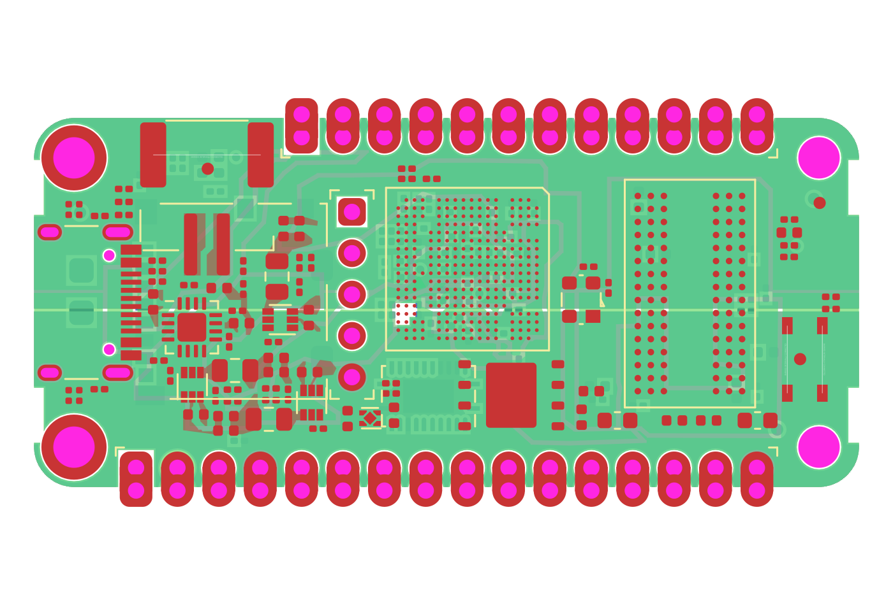
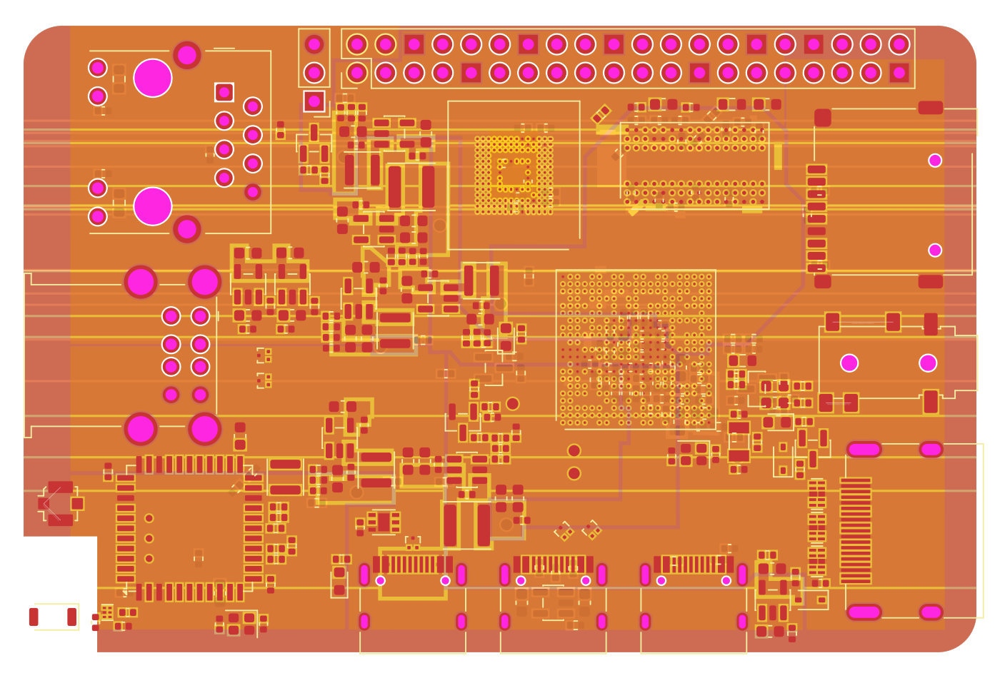

The latest native profile attributes 52.1% of sampled CPU time to buildPlan (inclusive) and 95.3% to plane-route search. A plane escape that terminates at its via still computed boundary/corner coordinates and slots. The fix moves that existing work behind the branch that uses it, retaining ordinary boundary and layered-winding behavior.
Scene
Before median s
After median s
Reduction
P95 s
Partial routes
Vias
iCE/Pi CM0 SBC
141.5
123.9
12.4%
142.1 → 124.3
7
7
i.MX6 Demo Board
124.1
107.1
13.7%
125.4 → 110.5
8
7
Each scene uses three serial matched pairs on one Blacksmith 8 vCPU ARM worker, alternating before/after,after/before,before/after. P95 is descriptive with three samples. All six runs per scene use identical input and copper hashes,26,131 iterations and zero independent copper DRC issues. These are times to finish a partial failed fanout search, not complete-board solve times.
Focused native before/after
The original U22 escape retains its exact two-segment path and Ø0.45/0.2 mm through-via. Unused boundary-slot calculations fall 1→0; independent DRC remains clear. The test-owned getter records actual work and updates the same native SVG through the stacked fix.
Actual joint native routing before/after
U22 remains 7/32 partial routes and 7 vias. Copper geometry is identical; the labels show measured medians from the three matched pairs. This partial output is not accepted into the final PCB.
Quality and full-board results
0/6 complete boards; 0/12 DDR bus phases start; zero accepted board traces or vias in both versions. Every full-board source/input/rule hash matches; all non-error Circuit JSON records match. Geometry and net-membership audits pass. Empty final copper is not a passing board.
Board
Best first fanout before
After
Render/routing s
Assignments
OrangeCrab rev 0.2.1 ECP5 DDR3
118/273
122/273
609.3 → 609.5
19 → 20
Allwinner H616 Devboard DDR3
88/174
88/174
604.5 → 604.4
222 → 175
ButterStick r1.0
62/91
62/91
497.7 → 464.4
256 → 256
Glider mainboard
60/95
60/95
381.1 → 361.8
256 → 256
i.MX6 Demo Board
8/32
8/32
430.6 → 388.3
256 → 256
iCE/Pi CM0 SBC
7/32
7/32
257.7 → 242.7
256 → 256
OrangeCrab's118→122 are unaccepted requests in its first273-request region. The 600 s routing deadline allows more search; this is not a connected full-board net count. All other best first-region counts match. Whole-board times are single unpaired failed/deadline-limited observations that include initialization and exclude the subsequent audit.
All 349 isolated native plane-bus outcomes remain unchanged:292 accepted,57 failed,no timeouts. All292 accepted copper hashes match with zero independent DRC issues. Fanout31 remains30 solved/42 timed out;all 72inputs,outcomes,routed counts and via counts match, and all 30 solved SVGs are byte-identical. Native same-worker complete-object checks also match default/fixed plane plans and ordinary/layered corner outputs.
Revisions and validation
The measured production revision is 9291506; final 578e4ca changes one line wrap and produces identical transpiled code. All fabrication rules, the 0.7 mm boundary padding, routing order and emitted geometry are preserved. Source-built core advertises the next patch in software metadata; core-build.json records the actual frozen 0.0.2422package and 24f154d revision.
The first iCE/Pi timing job failed at artifact transport before routing and was repeated in the final-check run. Only the six successful matched reports are used. Exact CI workflows, full results, CPU profile and checksum proofs are included. The six TSX models, geometry/net membership, runtime lock and reproduce-comparison.sh are in sources.
OrangeCrab rev 0.2.1 ECP5 DDR3

Before: full PCB after failed fanoutAfter: full PCB after failed fanout
Allwinner H616 Devboard DDR3
Before: full PCB after failed fanoutAfter: full PCB after failed fanout
ButterStick r1.0
Before: full PCB after failed fanoutAfter: full PCB after failed fanout
Glider mainboard
Before: full PCB after failed fanoutAfter: full PCB after failed fanout
i.MX6 Demo Board
Before: full PCB after failed fanoutAfter: full PCB after failed fanout
iCE/Pi CM0 SBC

Before: full PCB after failed fanoutAfter: full PCB after failed fanout